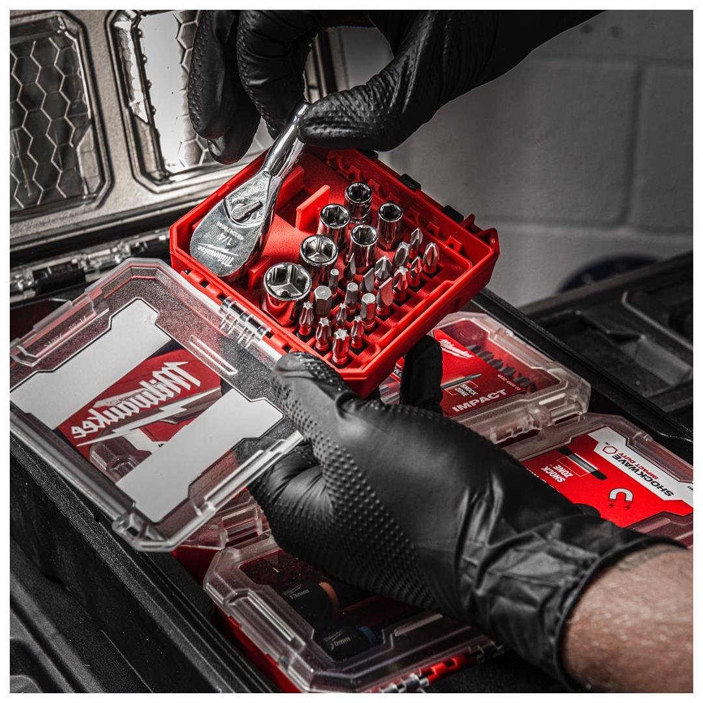
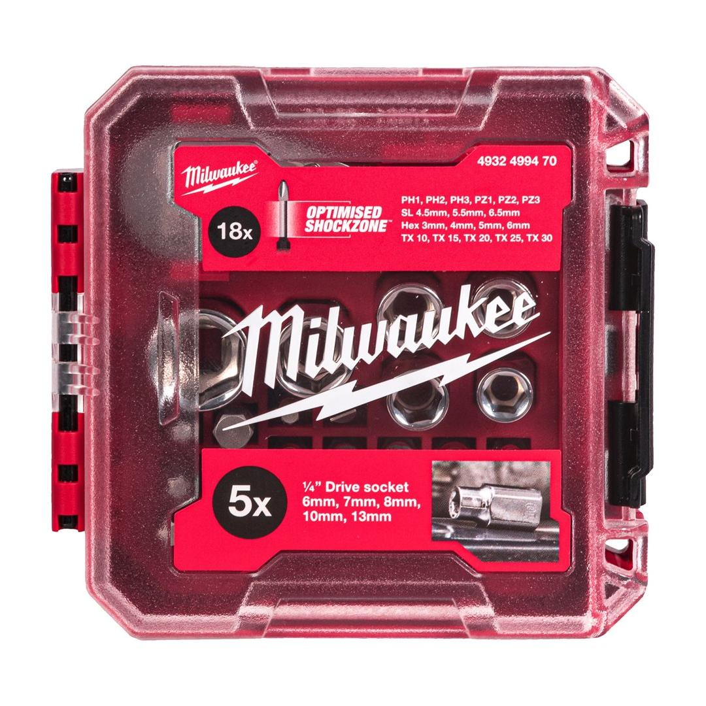
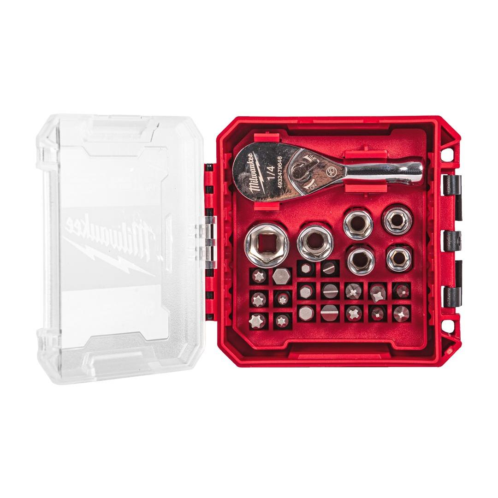
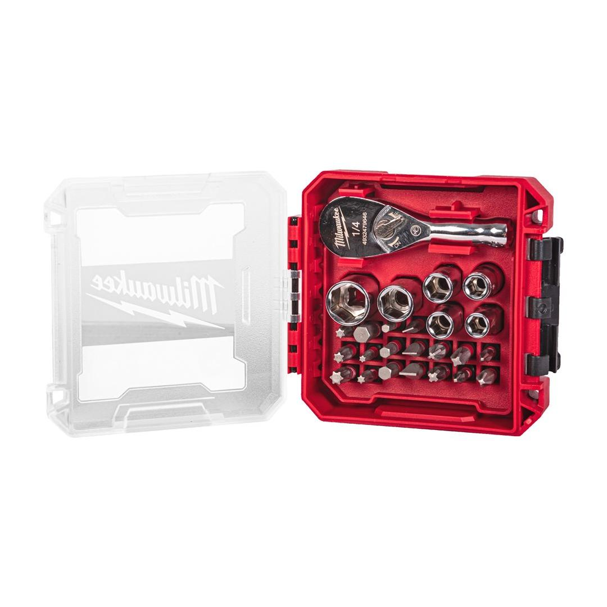
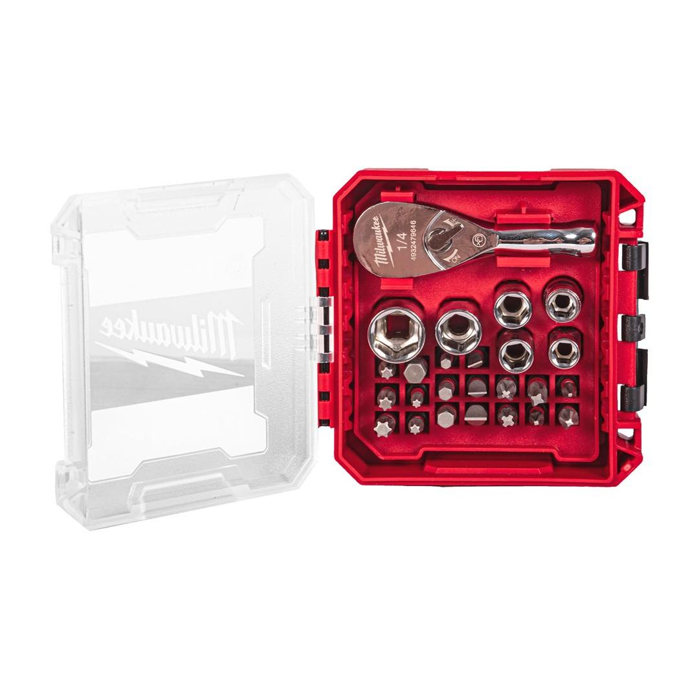

4932499470





| Contents | ¼″ Drive compact ratchet, ¼″ drive sockets: 6, 7, 8, 10, 13mm, ¼″ drive bit holder socket, SHOCKWAVE™ IMPACT DUTYbits PH1 , PH2, PH3, PZ1, PZ2, PZ3, SL 4.5mm, SL 5.5mm, SL 6.5mm, Hex 3mm, Hex 4mm, Hex 5mm, Hex 6mm, T10, T15, T20, T25, T30 |
| Drive Type | ¼″ |
| Pack quantity | 25 |
| Profile | mixed set |
| Quantity | 1 |